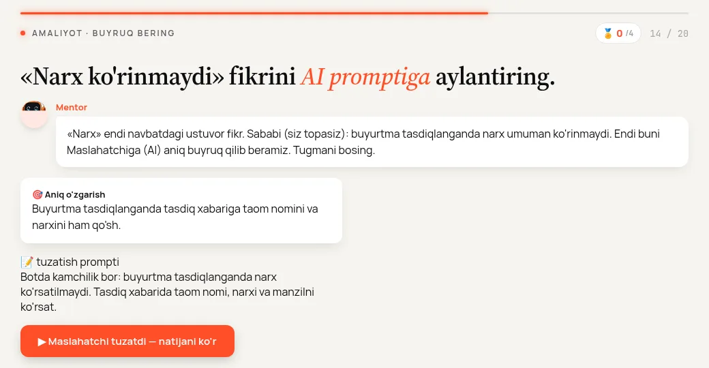
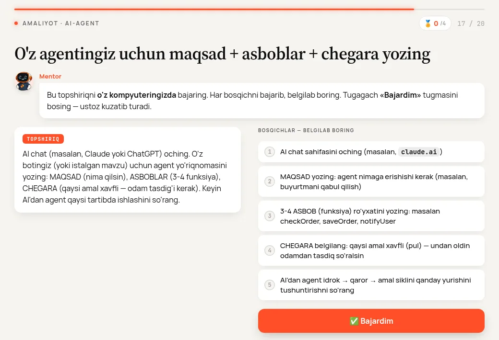
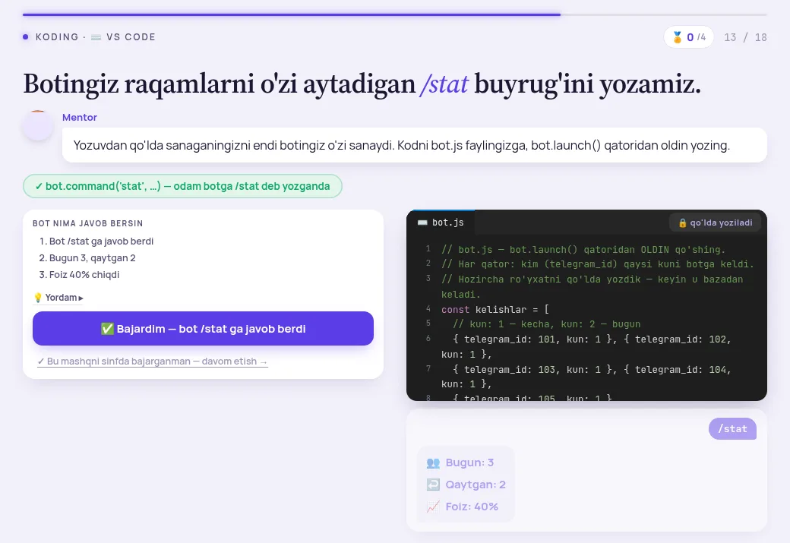

Har savolda hozirgi ekran, variantlarning ko'rinishi va taklifim. Tanlab, pastda «Javobni nusxalash» ni bosing. 4-dars ChatGPT auditidan yangi savol chiqmadi.


/stat nimani sanaydi?/stat — bitta kun (bugun, qaytgan, foiz), 12-dars hisob — kun sayin. Ikkala audit buni asosiy muammo dedi./stat uni sanamaydi.
/stat javobi: Bugun · Qaytgan · Foiz.Hammasiga rozi bo'lsangiz — «Taklifimni tanlash», keyin «Javobni nusxalash».
NOT NULL ✓